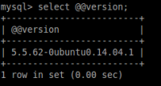
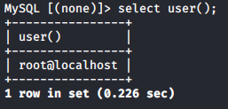
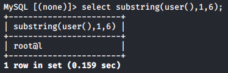

functions
| Database type | Query |
|---|
| Microsoft, MySQL | SELECT @@version |
| Oracle | SELECT * FROM v$version |
| PostgreSQL | SELECT version() |
user() → returns the name of the user currently using the database
substring() → returns a substring of the given argument. It takes three parameters: input string,
position of the substring, length of the substring
substring('d
aniele',
2, 1) → ‘a’
We can also combine substring() with user(): user()=d
aniele
substring(user(),2,1) → ‘a’
